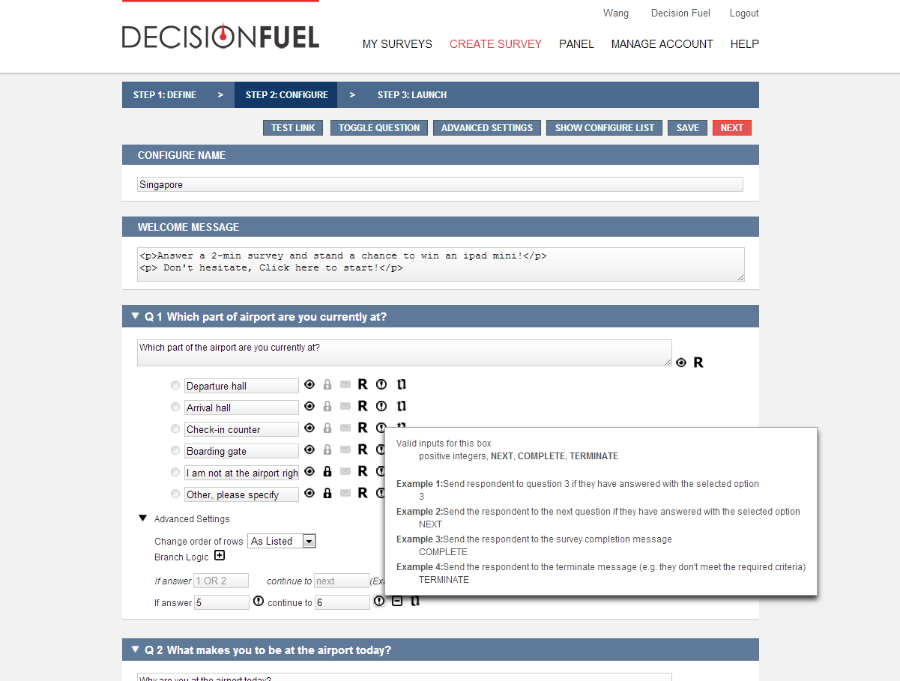
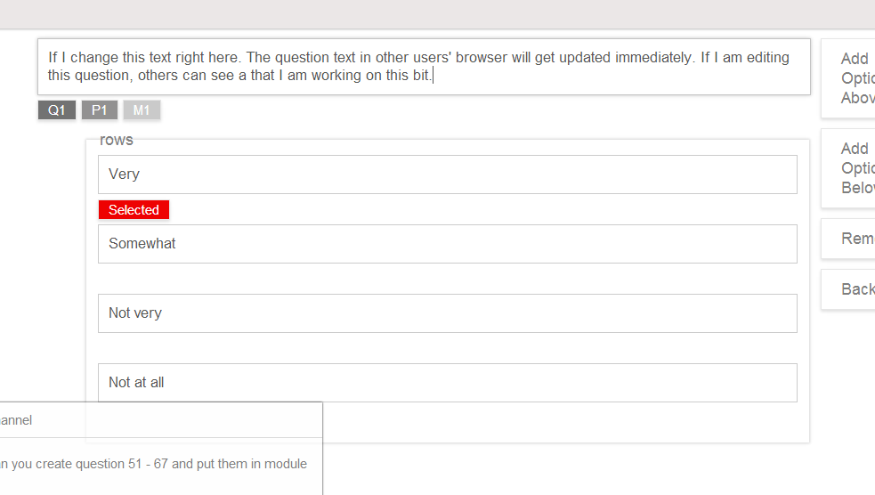
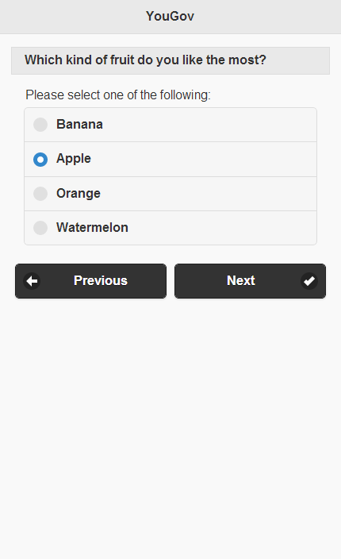
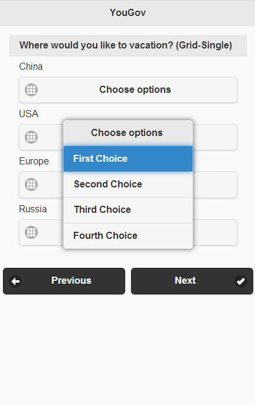
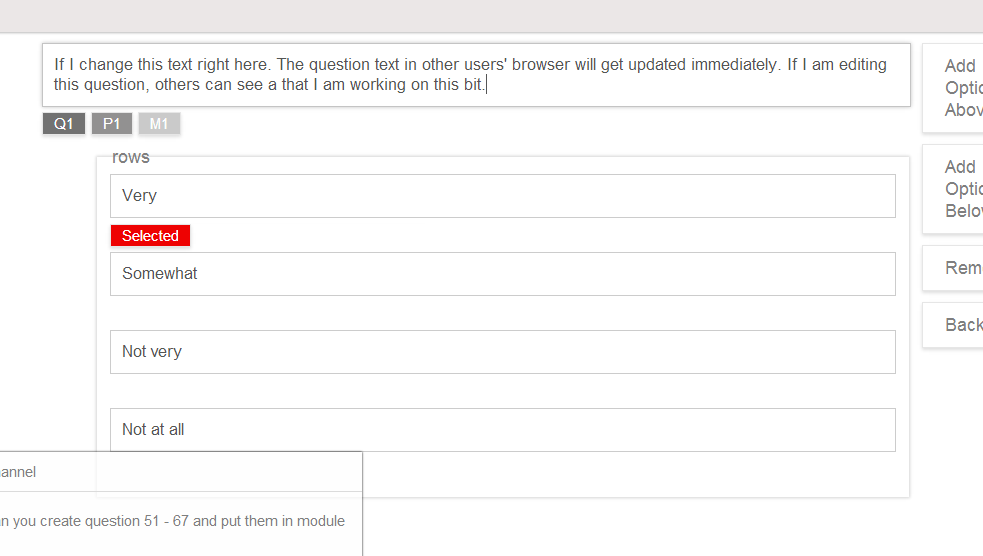
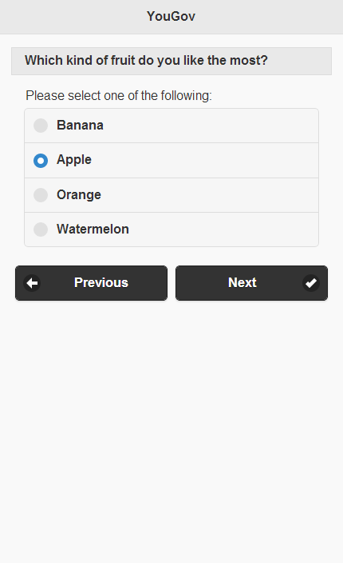
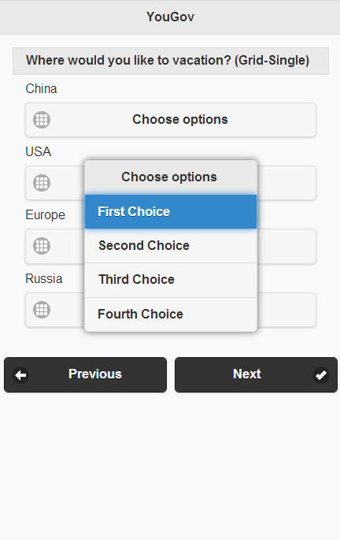

Hello IKKY!
@Ryder, thanks for providing me the information in the email you sent me on Monday. I am Wang Sheng and I would like to become the "legitimate user of the brand new 27'' iMac"
About this CV
If you are using Safari, you would need to enable "WebGL" first. If possible please view it in latest Chrome or Firefox. This CV uses no libraries, no frameworks and no plugins. It's all JavaScript written by me.
What do I do?
I build in-house software for a public company that does market research. In the first year of my career, I have been dealing with (slightly) over engineered code in the playground of OO.
In that year JSF has grown from a framework with a lot of bugs to one with slightly less bugs. And meanwhile I also write a lot of codes that start with @Stateless and @PersistenceContext.
In the second year of my career, I spent less time in the world of J2EE and started to spend more time writing JavaScript.
No I was writing form validations.I mainly build prototypes, single page applications and so on.
 





I also do 3D modeling with 3DS Max. But that's kinda relevant to the current topic.
Why do I want to have a change?
With the advent of Swift, I believe it's time for me to build stuffs that could be potentially used by a lot of people rather than just the guys in the business team who happens to be working in the same company that I work for. I have solid experience in Java, JSF, coding enterprise business logic. And I also have a lot of experience in JavaScript, HTML, CSS, SVG, WebGL, Canvas and so on and the common practise and pattern in all programming languages and frameworks would aid me in this change.
Why now?
I believe it's better to book a position in a company that provides booking solutions. If the company also books smart developers, that would be awesome!
Here is the plan
I never underestimate the complexity of iOS platform. But at the same time I guess one does not need to know everything to start writing quality codes (Yes, knowing more definitely helps a lot and I shall continue studying the platform after I become an iOS developer.).
My notification period is 2 months and I am planning to make the most of it. I am used to spending some quality time in the CityU library. That's also where I learnt what quaternion and homogeneous coordinates system are. I have already been making effort for the change. I am going to adopt the new language quickly. And start coding simple applications by following tutorials. These small applications will not only allow me to get familiar with the iOS platform and its libraries, but also allow me to get hands on experience with the new language. And most important of all, I get to become familiar with the documentations and will know where to find the answers if I do not have one.
When I was two years younger
I got my master degree in Business Information System in City University of Hong Kong, with a GPA of 3.62. I scored 105 in TOFEL, 710 in GMAT. I speaks Mandarin, English and Cantonese.
Contact me
Please contact me at wang.sheng.unique@gmail.com. My current work schedule is unfortunately very tight and I might not be able to attend an interview or Skype call from 9:30 am to 7:00pm. However I will definitely respond to any questions and queries as soon as possible.